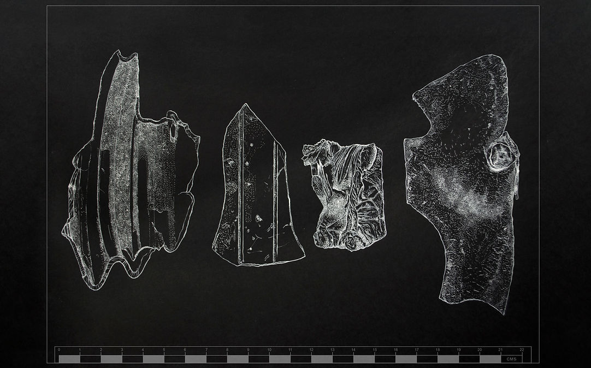
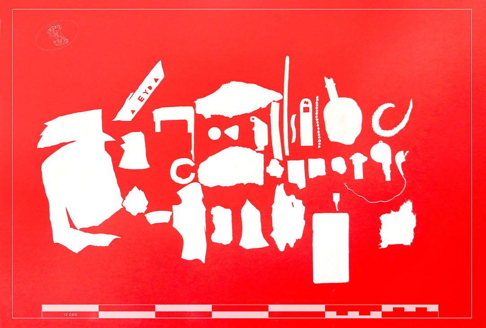
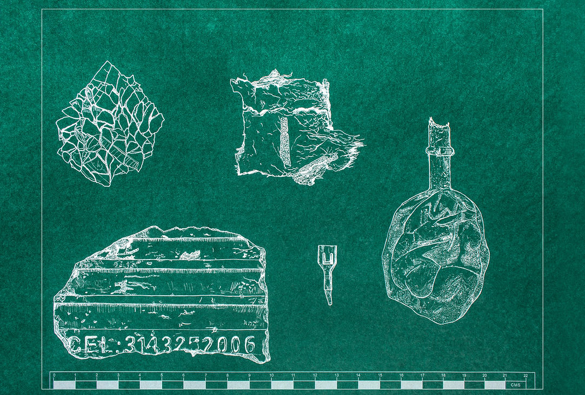
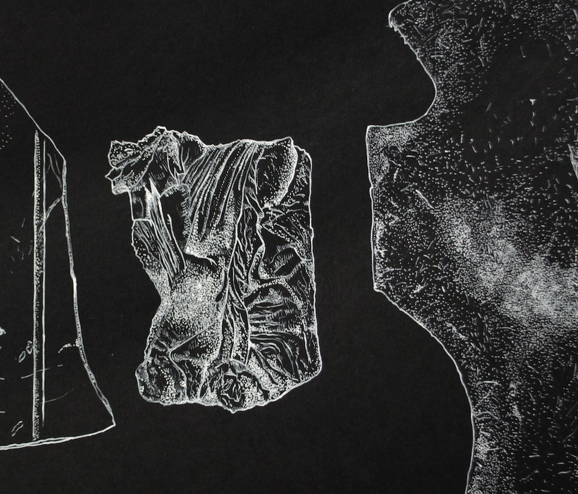
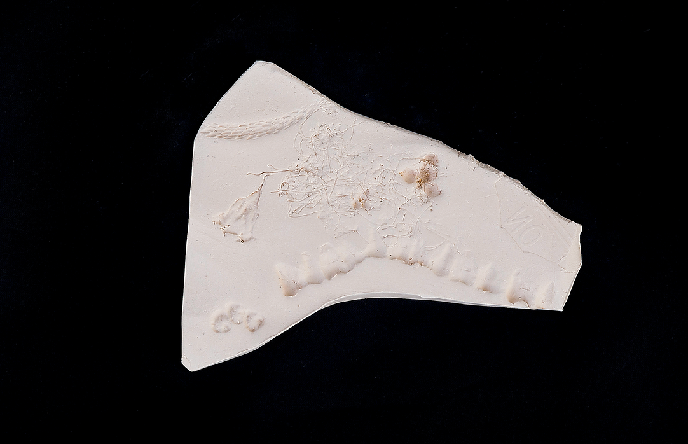
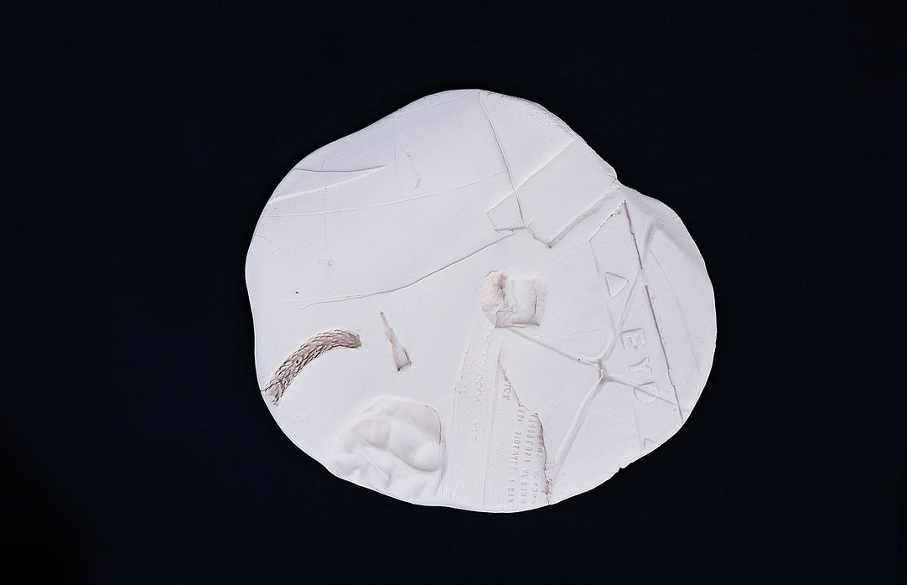
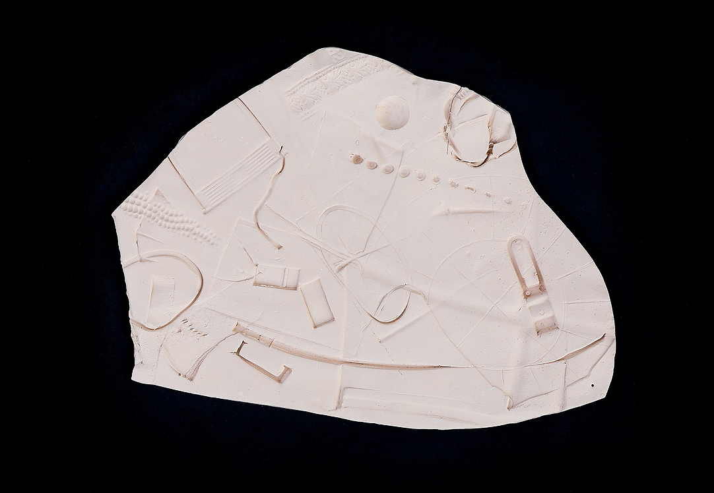

excess
Barcú Fair - Spotlights section - 2020 edition
This project explores the standard codes and measurements used in archaeological records, building a narrative out of the question of what deserves to be studied and measured, and so opening up possibilities around subjective interests.
For a month I walked the streets around the La Esmeralda neighbourhood in Bogotá, where I was living at the time, finding fragments of rubber and plastic, parts of accessories, pieces of acrylic. These objects had a history bound directly to the area, which prompted the idea of making a series of drawings in which I could experiment with archaeological codes by designing templates and drawing over them. The exercise leads one to think that whatever is measured and recorded holds material and archaeological value.
In the series "Contacto", pieces I made in clay, I used the clay as a matrix to apply pressure, impressing on it the features, textures, reliefs and contours of these objects that belong to a whole that no longer exists.

Edición 2020 Barcú Spotlightshttps://barcu.com/marketplace/spotlights/sofia-lozano/


Untitled. Series of three drawings. 48 x 33 cm. Digital print and white ink on paper. 50 x 35 cm each. 2020.

Detail. Untitled. 48 x 33 cm. Digital print and white ink on paper. 50 x 35 cm. 2020.



“Contacto”. Ceramic. Dimensions variable. 2020.